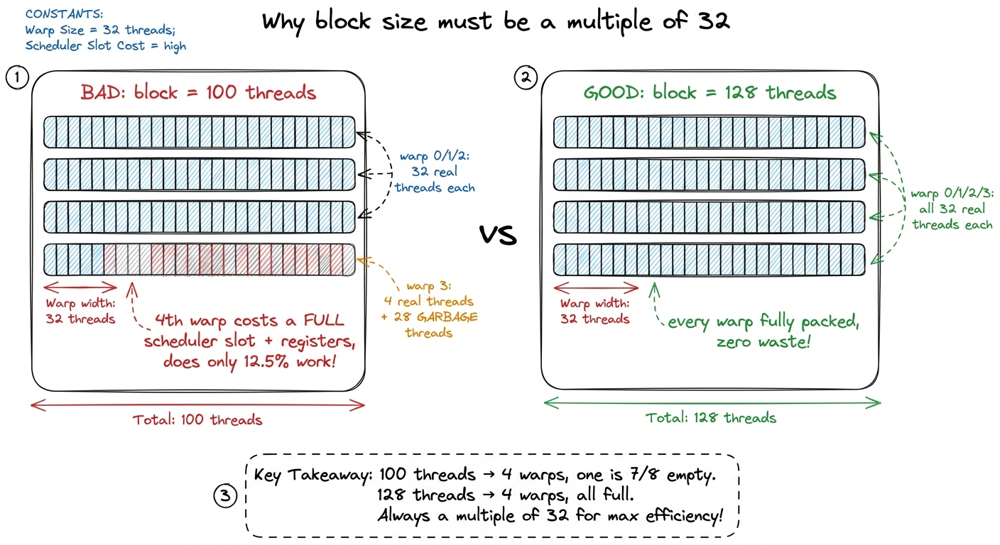
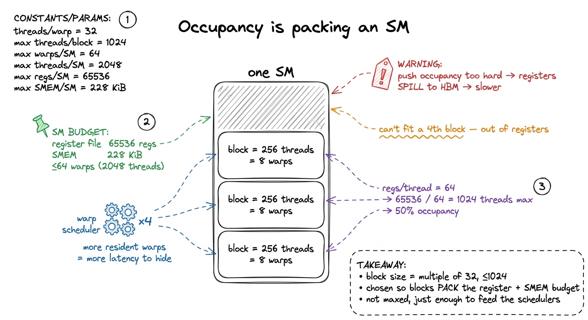
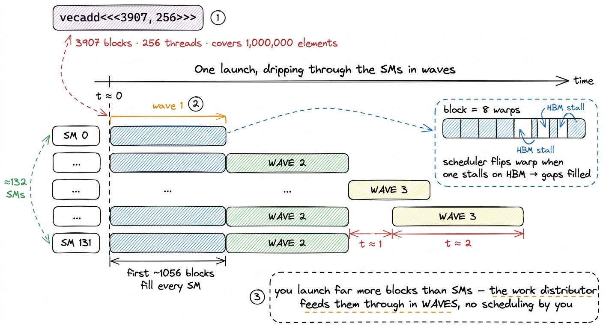

Threads, warps, blocks, grids
Here is a puzzle to start with. I write one function. The GPU runs it a million times, all at once, and each of those million copies produces a different number and writes it to a different place in memory. But the copies are identical — same instructions, same code, byte for byte. So how does copy number 814,203 know that it is the one that should compute the pixel in row 12, column 41, and not step on the toes of copy number 814,204?
That question — "which copy am I, and what slice of the problem do I own?" — is the whole game. It is the first thing every CUDA kernel computes, and it is the first thing you have to understand before any optimization on this site makes sense. The answer lives in a four-level hierarchy: thread, warp, block, grid. Three of those names you type yourself. The fourth the hardware forces on you whether you asked for it or not.
This article is the map I keep coming back to. There is no profiling here, no GEMM ladder, no tensor cores — just the mental model that makes every later worklog legible. I want you to finish this page able to look at a kernel launch and see, in your head, how the work spreads across the silicon. Let me build that picture from nothing.
The one idea underneath everything: same code, different identity
Start with the thing that makes a GPU a GPU. A CPU core is a genius that works alone: it runs one thread very fast, with deep caches and clever branch prediction to keep that single stream of instructions fed. A GPU is the opposite bet. It is thousands of modest workers, all running the same instructions in near-lockstep, betting that your problem has thousands of near-identical pieces of work to hand out. Adding two vectors of a million elements? That is a million tiny identical jobs: C[i] = A[i] + B[i]. Perfect GPU food.
So the programming model is: you write the body of the loop once, as a function called a kernel, and you tell the GPU "run this a million times in parallel." Each running copy is a thread. Every thread executes the exact same kernel code. The only thing that differs between them is a small set of built-in index variables the hardware hands each thread — its identity. From that identity, and nothing else, the thread computes which element it owns.
That is the entire trick, and also the entire difficulty. The first time I got the identity arithmetic slightly wrong, the kernel compiled cleanly and produced silently wrong numbers — no crash, no warning, just garbage that looked plausible. The first time I got the grouping of threads wrong, the answer was perfectly correct but three times slower than it should have been. Correctness and speed both hang on how you slice the work. So let us learn the slicing.
 figure rendering · The core mental model: one kernel, a million copies, each copy differs
figure rendering · The core mental model: one kernel, a million copies, each copy differsHold onto that picture — the fan-out of identical workers, each with a number pinned to its chest. Every level of the hierarchy we are about to build is just a way of organizing those workers so the hardware can schedule them and so they can cooperate. That is the pebble we will carry through the whole article.
The four levels, top to bottom
CUDA gives you a software hierarchy with three names you type and one the hardware imposes on you whether you like it or not. Let me lay them out from the outside in, because that is the order you think about them when you launch a kernel.
A grid is the entire launch: every thread created by one kernel<<<grid, block>>> call. If you launch a million threads, the grid is that whole million. You never touch all of it at once; it is just the set. The grid is your answer to "how big is the total problem?"
A block — formally a Cooperative Thread Array (CTA) — is a group of threads that are guaranteed to run together on one SM, share a scratchpad of on-chip shared memory, and can synchronize with __syncthreads(). The block is the unit of cooperation. Threads inside one block can hand each other data through fast on-chip memory and wait for each other at a barrier. Threads in different blocks cannot cheaply talk to each other at all — the model deliberately forbids it, because blocks must be able to run in any order, on any SM, so the same kernel scales from a tiny laptop GPU to a full H100.1 This independence is a hard requirement, not a style guideline: the CUDA model states "blocks must execute independently, so that any execution order for blocks is valid." The hardware may run your blocks serially, all in parallel, or any interleaving in between — and your kernel must be correct in every case. That is exactly what lets one binary scale across GPUs with wildly different SM counts.
A thread is the smallest unit: its own program counter, its own private registers, its own slice of the output. This is one of the identical workers from the figure above.
And then there is the level you did not ask for. The hardware silently chops every block into warps of exactly 32 threads. A warp is the true unit of execution — all 32 lanes issue the same instruction in the same cycle, on 32 different data elements. This is the SIMT (single-instruction, multiple-thread) execution model, and the number 32 is not a suggestion. It is baked into the scheduler, the register file layout, and the memory coalescer. Almost every performance rule on this site is downstream of that one constant.
Why should you care about a level you never type? Because it is where the real cost lives. When you write a block of 256 threads, you are really writing 8 warps, and the hardware only ever thinks in warps. If your 256 threads all take the same branch of an if, great — the warp runs it once. If half of them take one branch and half the other, the warp has to run both branches, masking off the lanes that should not participate in each — an effect called warp divergence that can halve your throughput. You cannot reason about that without seeing the warps hiding inside your blocks.
 figure rendering · The four software levels plus the warp the hardware forces on you. The
figure rendering · The four software levels plus the warp the hardware forces on you. TheLook at that figure and read it twice. Grid contains blocks; each block is silently sliced into warps of 32; each warp is 32 lanes; each lane is a thread. Four nested dolls. Three you name, one the hardware imposes. If you remember only one thing from this page, remember that the warp of 32 is the unit that actually runs.
Where each level lands on the H100
Here is the part that turned the hierarchy from an abstraction into something I could feel. The four levels are not floating above the metal — each one maps, almost literally, onto a physical piece of an H100. And once you see the mapping, every optimization on this site reveals itself as a statement about one of these arrows. Let me walk them from the bottom up, because that is where the hardware detail is richest.
A thread maps to a lane — one slot in the SM's datapath. Each thread gets a private allocation of registers carved out of the SM's register file. On an H100 that file holds 65536 32-bit registers (about 256 KB), and a single thread may use at most 255 of them. Registers are the fastest memory on the chip — a thread reads its own registers essentially for free, in the same cycle as the instruction that uses them. They are also genuinely private: one thread cannot read another thread's registers.2 "Private to each thread" has exactly one exception on modern hardware: warp-shuffle intrinsics like __shfl_sync let a lane read another lane's register within the same warp, and tensor-core / wgmma instructions read fragments spread across a whole warp's registers. Across warps, and certainly across blocks, registers are genuinely inaccessible — there is no instruction that can name them.
A warp maps to a warp scheduler. This is the single most important arrow on the page, so let me slow down. Each SM on an H100 has four warp schedulers. Every cycle, each scheduler looks at all the warps currently living on the SM, picks one that is not stalled, and issues its next instruction. That is it. That one behavior — pick a ready warp, issue it — is the beating heart of GPU performance.
Why does it matter so much? Because memory is slow. When a warp asks HBM for data, the answer takes something like ~400–500 cycles to arrive. On a CPU, a stall like that is a disaster; the core sits idle, and elaborate cache hierarchies exist mostly to avoid it. On a GPU, the scheduler just shrugs. Warp A issues a load and stalls waiting for memory? Fine — next cycle the scheduler issues warp B, then warp C, then warp D, then back around. By the time it comes back to warp A, the data has arrived. The latency never went away. It got hidden behind other warps' useful work. This is latency hiding, and it is why a GPU can tolerate memory delays that would grind a CPU to a halt.3 The A100 puts a hard cap on this: an SM can hold at most 64 resident warps, i.e. 2048 threads. That cap is your ceiling on how much latency you can hide by throwing more warps at a scheduler. The H100 keeps the same 2048-threads-per-SM ceiling. Once you hit it, more parallelism has to come from doing more work per thread, not from more threads.
There is a subtle consequence here worth stating out loud, because it surprised me when I first internalized it: a GPU does not go fast by making any single thread fast. Each thread is unremarkable. The GPU goes fast by having so many warps in flight that a scheduler never runs out of ready work — the stalls of one warp are always covered by the readiness of another. Keeping the schedulers fed is the entire performance game, and it has a name: occupancy. We will come back to it.
A block maps to a Streaming Multiprocessor (SM) — one of the H100's ~132 SMs, distributed across 8 Graphics Processing Clusters (GPCs). The block runs on exactly one SM for its whole life; it never migrates. Its shared memory is carved out of that SM's 256 KiB combined SMEM+L1 pool (up to 228 KiB usable as shared memory), and its threads' registers come out of that SM's register file. Crucially, an SM can hold several blocks at once, as long as their combined demand for registers, shared memory, and warp slots fits inside the SM's budget. That "if it fits" is the whole occupancy story, coming up.
A grid maps to the whole GPU. The blocks of a grid are handed out to SMs by a hardware work distributor as SMs free up. You almost always launch far more blocks than there are SMs, so they drain through in waves: the distributor fills all 132 SMs, and as each block finishes and frees its resources, the next waiting block drops in. You never schedule this yourself — that is the point. Launch a million blocks and the hardware feeds them through 132 SMs without you writing a single line about it.
 figure rendering · The mapping to memorize: thread→lane, warp→scheduler, block→SM, grid→G
figure rendering · The mapping to memorize: thread→lane, warp→scheduler, block→SM, grid→GPin that mapping to the wall: thread→lane, warp→scheduler, block→SM, grid→GPU. When we later say "coalescing," we will mean the lanes of a warp touching the right addresses. When we say "tiling," we will mean what a block stages in its SM's shared memory. When we say "occupancy," we will mean how many blocks an SM holds. All of it is this one picture, refracted.
Computing "who am I": the indexing arithmetic
Now back to the opening puzzle. Every thread runs the same code, so the first thing any kernel does is figure out its own identity from the built-in variables CUDA injects into every thread:
threadIdx— this thread's position within its block.blockIdx— which block this thread lives in.blockDim— the shape of the block (how many threads it holds per axis).
Each of these is a dim3 with .x, .y, .z fields, so you can lay out threads in 1-D, 2-D, or 3-D — whatever matches your data. For a vector you use one axis; for a matrix, two.
The canonical one-dimensional index — a thread's position across the entire grid — is one line you will type ten thousand times:
int i = blockIdx.x * blockDim.x + threadIdx.x;Do not memorize it — read it. It says: skip past all the blocks that come before me, then add my offset inside my own block. There are blockIdx.x blocks ahead of mine, each blockDim.x threads wide, so blockIdx.x * blockDim.x is how many threads belong to earlier blocks. Add threadIdx.x, my seat number within my own block, and I get my unique global position. Concretely: if blockDim.x = 256, then block 0 owns global indices 0–255, block 1 owns 256–511, block 2 owns 512–767, and so on. Thread 44 of block 1 is global index 1·256 + 44 = 300. Every thread lands on a distinct, contiguous global index. No two workers write the same slot. Puzzle solved.
Let me do that tiny example fully by hand, because the whole article rests on it. Suppose I launch 2 blocks of 256 threads to process a 512-element array. The grid is (2,1,1), the block is (256,1,1). Thread threadIdx.x = 44 inside blockIdx.x = 1 computes i = 1 × 256 + 44 = 300. It reads A[300] and B[300], adds them, writes C[300]. Meanwhile thread 44 of block 0 computes i = 0 × 256 + 44 = 44 and handles element 44. Different identity, different element, no collision. That is the fan-out from the first figure, made arithmetic.
For a 2-D problem like a matrix, you do the same thing on each axis independently — a row from the .y axis, a column from the .x axis:
int row = blockIdx.y * blockDim.y + threadIdx.y;
int col = blockIdx.x * blockDim.x + threadIdx.x;
if (row < M && col < N) { // guard the ragged edge
C[row * N + col] = /* ... */; // row-major linear index
}Two details in that snippet are load-bearing, and both are places where I have personally shipped bugs.
First, the bounds check. Your grid almost never divides the problem evenly. If N = 1000 and your block is 256 wide, you cannot launch 1000/256 = 3.9 blocks — you launch 4, which covers 4·256 = 1024 threads, 24 more than you need. Those extra threads have valid identities but point past the end of the array. The if (row < M && col < N) kills the overhang so they do nothing instead of scribbling past your buffer into someone else's memory. You round up on the block count precisely so you never leave elements uncovered, then mask the excess.4 The idiom for rounding up is CEIL_DIV(N, B) = (N + B - 1) / B, integer-ceiling division. Launching a hair too many threads and masking the excess is universal and essentially free: when the whole warp evaluates the same guard the same way — which it does at the interior — the branch is uniform, so there is no divergence and no real cost. Only the one warp straddling the true edge pays a little.
Second, the flattening. Physical memory is one-dimensional — a flat array of bytes. A 2-D coordinate (row, col) becomes a single offset row * N + col for a row-major array, where N is the number of columns (the row stride). This is the single most common CUDA bug I see, and it compiles perfectly every time: write * M instead of * N, or swap row and col, and you get a kernel that runs, returns numbers, and is entirely wrong. There is no compiler on earth that will catch a stride mistake, because both are just integers. You catch it by testing against a known-correct reference, which is exactly why the benchmark methodology article insists on a correctness check before a timing run.
 figure rendering · Each thread derives a unique global index from blockIdx, blockDim, thr
figure rendering · Each thread derives a unique global index from blockIdx, blockDim, thrChoosing the block size: multiples of 32, and never more than 1024
Now the practical question every kernel forces on you: how big should a block be? You get to pick blockDim. Pick badly and you leave performance on the table before you have written a single line of math. Two hard rules and one soft one govern the answer, and each one falls straight out of the hardware mapping we just built.
Hard rule one: a block may not exceed 1024 threads. This is a fixed hardware limit — blockDim.x * blockDim.y * blockDim.z ≤ 1024. Ask for more and the launch simply fails; the kernel does not run at all. So a square 2-D block tops out at 32×32 = 1024, and a 1-D block tops out at 1024. There is no negotiating with this one.
Hard rule two: make the block a multiple of 32. This one is not enforced — the launch will succeed — but violating it wastes hardware, and here is exactly why. The SM slices your block into warps of 32. Suppose you pick a block of 100 threads. The hardware cannot make a warp of 3.125; it makes four warps — three full ones (96 threads) and a fourth warp that is 4 real lanes padded up to 32 with garbage. That fourth warp still occupies a full warp's slot in a scheduler, still consumes a full warp's share of the register file, still gets issued every time the scheduler picks it — and does only 4/32 = 12.5% useful work. You paid for a warp and used an eighth of it. Multiply that waste across a whole grid and it is real. This is why every block size you will ever see in the wild — 128, 256, 512 — is a multiple of 32. Not superstition. Arithmetic.

figure rendering · The naive vs the good block size. A block of 100 spawns a fourth warpThe soft rule is where judgment enters: of all the legal multiples of 32, which one? This is the occupancy question, and it is fundamentally a resource-packing problem — think Tetris on the SM. An SM has a fixed budget: 65536 32-bit registers, up to 228 KiB of shared memory, and a cap of 64 resident warps (2048 threads). It packs in as many blocks as those three budgets simultaneously allow, and whichever budget runs out first is your bottleneck.
Let me make the packing concrete with the register budget, because it is the one that bites most often. Say each thread uses 64 registers. Then the SM's register file supports 65536 / 64 = 1024 threads' worth of registers at once. So no matter how you shape your blocks — four 256-thread blocks, two 512-thread blocks, whatever — at most 1024 threads can be resident on that SM, which is 1024/2048 = 50% of the warp cap. Now ask for 128 registers per thread instead: 65536 / 128 = 512 threads, half as many, 25% occupancy. The register appetite of a single thread ripples all the way up to how many warps the scheduler has to hide latency with. Occupancy is exactly that ratio — resident warps divided by the SM's maximum — and it is the knob that controls how much memory latency the four schedulers can paper over.
Here is where it gets counterintuitive, and where a lot of beginners over-optimize. More occupancy is not automatically better.5 Past the point where the schedulers always have a ready warp to issue, extra occupancy buys you nothing — the latency is already fully hidden. Worse, chasing higher occupancy can force the compiler to spill registers to local memory (which physically lives in slow HBM) so that more threads fit, and now every spill is a memory round-trip that makes things slower. Many of the fastest kernels on the GEMM ladder deliberately run at 50–60% occupancy with fat, generous register allocations per thread. Occupancy is a means to hide latency, not a score to maximize.
So block-size selection is a negotiation, not a formula. Bigger blocks amortize launch overhead and give __syncthreads() more threads to cooperate on a shared-memory tile — great for tiled GEMM. But they demand more registers and shared memory as one indivisible unit: a block only becomes resident if the whole block's resources fit at once. A 512-thread block that needs more registers than currently remain on any SM just waits in the work distributor until an SM drains enough to fit it. The common default advice — start at 128 or 256 threads — exists because those sizes pack cleanly into almost any register budget while still handing each of the four schedulers several warps to juggle.

figure rendering · Block size is a resource-packing decision. Registers and shared memoryA whole launch, end to end: one concrete walk
Let me tie every level together with a single concrete launch, following one thread from birth to write. I want to add two vectors of 1,000,000 floats. I choose a block of 256 threads (a multiple of 32, well under 1024). I need to cover a million elements, so I launch CEIL_DIV(1000000, 256) = 3907 blocks. My launch is vecadd<<<3907, 256>>>(...).
Now trace it top-down. The grid is those 3907 blocks — one million total threads (well, 3907 × 256 = 1,000,192, a few hundred extra that the bounds check will silence). The hardware work distributor starts dripping blocks onto the H100's ~132 SMs. Each SM can hold, say, 8 of these blocks at once if the register budget allows (8 × 256 = 2048 = the full warp cap), so the first wave places roughly 132 × 8 ≈ 1056 blocks; the remaining ~2851 wait and drop in as blocks finish. Inside one SM, one of my blocks of 256 threads becomes 8 warps. The SM's four warp schedulers get two warps each to juggle. Every cycle, each scheduler issues one ready warp; when a warp stalls on its A[i] load from HBM, the scheduler flips to a sibling warp, hiding the ~500-cycle latency behind real work. Inside one warp, 32 threads run lockstep. And one of those threads — lane 44 of blockIdx.x = 1 — computes i = 1·256 + 44 = 300, reads A[300] and B[300] from its private registers after the load lands, adds them, and writes C[300]. One worker, one number, one slot. Multiply by a million.
That single walk is the whole article in motion. Notice how each level did exactly one job: the grid sized the problem, the distributor spread blocks across SMs, the SM hosted a block, the block became warps, the schedulers hid latency, the warp ran lockstep, the thread computed one element. Nothing was wasted, and nothing needed me to micromanage it beyond choosing a block size and a grid size.

figure rendering · The grid does not run all at once. The hardware work distributor dripsWhy this hierarchy, and where it goes next
When I step back, the design reads as coherent rather than arbitrary — every level earns its place by trading a little flexibility for a lot of hardware efficiency.
The warp exists so 32 lanes can share one instruction fetch and one scheduler slot: 32× the work for 1× the control overhead. That is the cheapest parallelism the chip can offer, and it is why the number 32 haunts every later rule.
The block exists so a group of warps can share a fast on-chip scratchpad and synchronize at a barrier. That is what makes shared-memory tiling possible — the single technique that takes GEMM from embarrassing to competitive — because a block can stage a tile of a matrix in SMEM once and let all its warps reuse it many times, instead of each thread hammering HBM.
The grid exists so the work distributor can scale a launch across every SM without you thinking about it, and so the same binary runs on a laptop's 20 SMs or an H100's 132. That is why blocks must stay independent: independence is what buys portability.
And the whole thing is engineered around one goal — that the schedulers always have another warp ready to run while the current one waits on memory. That is latency hiding expressed in silicon, the structural reason a GPU can be memory-latency-bound and still run flat out.
Everything downstream leans on this map. Coalescing is a statement about which lanes of a warp touch which addresses. Shared-memory tiling is a statement about what a block stages on-chip. Occupancy tuning is a statement about how many blocks an SM holds. Warp divergence is a statement about lanes within a warp taking different branches. Learn to translate each optimization back into "which level, which arrow," and the rest of this site stops being a list of tricks and becomes one coherent story.
Here is the concrete promise of that. When we start the GEMM ladder in earnest, the very first optimization — the jump from a miserable 1.3% of cuBLAS to 8.5% — is nothing but a one-line change to how we assign blockIdx and threadIdx to output elements, so that a warp's 32 lanes read contiguous memory instead of scattered addresses. That fix will look like meaningless index juggling without this map. With the map, it is obvious: we are making the 32 lanes of a warp hit 32 adjacent addresses so the memory system can serve them in one shot. Same code, different identity — arranged so the hardware loves it. On to shared memory, the block-level scratchpad that turns this hierarchy into speed.